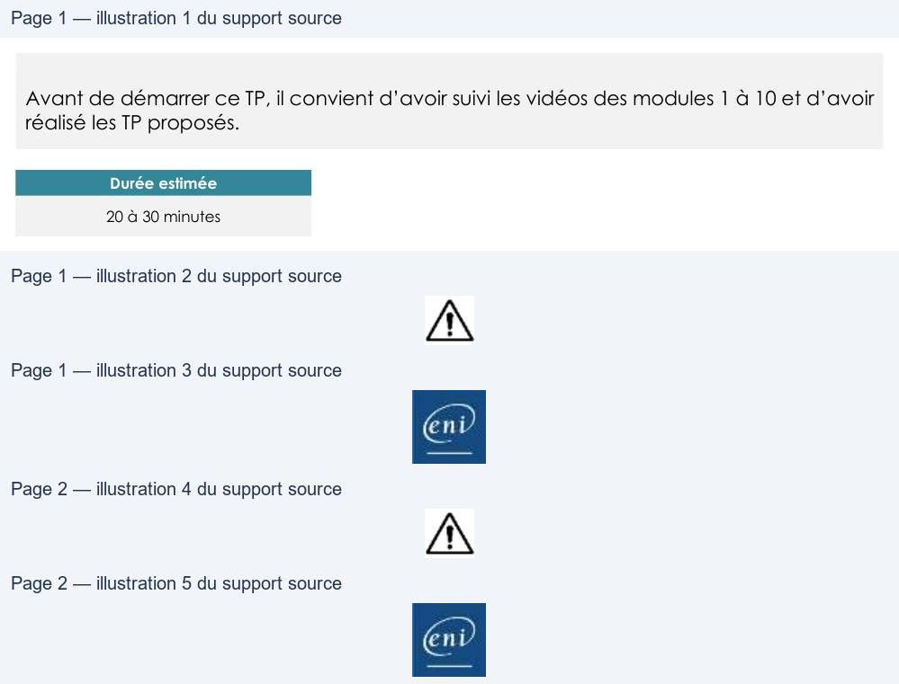

Transcription du document du Drive TSSR. La mise en forme est adaptée au Web ; les compléments IA du portail sont présentés séparément.
Administration Debian GNU/Linux
TP du Module 10 – titre Gestion des utilisateurs et des groupes
Avant de démarrer ce TP, il convient d’avoir suivi les vidéos des modules 1 à 10 et d’avoir
réalisé les TP proposés.
Durée estimée
20 à 30 minutes
I.
Création d’utilisateurs et de groupes sur le serveur sans
environnement graphique
Créer des comptes utilisateurs pour : François, Frédéric et Fabrice avec les caractéristiques
précisées.
Attention il faudra au préalable créer les groupes nécessaires à la configuration des
utilisateurs.
•
Pour François :
o Shell à utiliser Le shell sh
o Répertoire personnel /home/francois
o Mot de passe password
o Groupe principal admin
o Groupes secondaires stagiaires, documentation
•
Pour Frédéric :
o Shell à utiliser Le shell bash
o Répertoire personnel /home/frederic
o Mot de passe AchAngEr
Ce mot de passe sera à changer à la première
ouverture de session
o Groupes secondaires stagiaires, documentation
Page 1/2
© ENI – Tous droits réservés
ea
AN
Administration Debian GNU/Linux
•
Pour Fabrice :
o Shell à utiliser Le shell bash
o Répertoire personnel /home/fabrice
o Mot de passe password
Son compte devra être désactivé
o Groupes secondaires vip
Indice pour le mot de passe de Frédéric : voir le man de la commande passwd
IL EST INTERDIT DE MODIFIER DIRECTEMENT LES FICHIERS : /etc/passwd/, /etc/group,
/etc/shadow, /etc/gshadow
Une solution est proposée pour ce TP sous la forme d'un PDF commenté, disponible dans les
ressources à télécharger.
Page 2/2
© ENI – Tous droits réservés
À --a—_—WT_———
